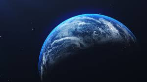

Earth is the third planet of the Solar System. It is the only planet known to have life on it. The Earth formed about4.5 billion years ago.[29][30] It is one of four rocky planets on the inner side of the Solar System. The other three are Mercury, Venus, and Mars. The large mass of the Sun keeps the Earth in orbit,[31] just as the mass of Earth keeps the moon moving around it. Earth also turns around in space, so that different parts face the Sun at different times. Earth goes around the Sun once (one year) for every 3651⁄4 times it turns around (one day).
| Name | Radius | Average Temperature |
|---|---|---|
| Mars | 3,396km | -46°c |
| Venus | 6,052km | 462°c |